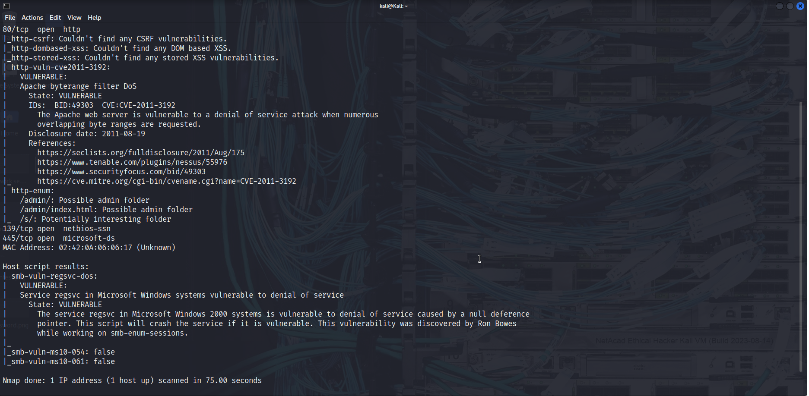

Project Overview
Performed systematic vulnerability assessments on network infrastructure and systems using scanning tools. The assessment combined network reconnaissance with scripted scanning: Nmap discovered active hosts and open ports, and the Nmap Scripting Engine (NSE) then probed those services for known weaknesses and misconfigurations.
The aim was not to exploit, but to map the exposure surface clearly so that remediation could be prioritized by risk.
Key Focus: Mapping the exposure surface accurately so remediation can be prioritized by real risk.
Key Responsibilities
- Performed network reconnaissance using Nmap to discover active hosts.
- Enumerated open ports and running services on target systems.
- Ran Nmap NSE scripts to detect vulnerabilities and misconfigurations.
- Assessed and ranked findings by severity and exposure.
- Produced clear assessment reports with prioritized remediation steps.
- Maintained authorized, non-disruptive scanning throughout.
Systems & Components Assessed
- Active Hosts & Open Ports
- Running Services & Versions
- NSE Vulnerability Scripts
- Misconfiguration Findings
- Severity & Exposure Ratings
- Prioritized Remediation Reports
Tools & Technologies Used
Nmap
Nmap Scripting Engine (NSE)
Kali Linux
Vulnerability Scanning
Reporting
Assessment Activities
- Discovering live hosts on the target network
- Enumerating ports and service versions
- Selecting and running relevant NSE scripts
- Interpreting scan output and removing false positives
- Ranking findings by severity
- Writing prioritized remediation guidance
Impact & Outcomes
- A clear, accurate picture of the network exposure surface.
- Open ports and vulnerable services identified before attackers could find them.
- Prioritized remediation so effort focused on the highest risk first.
- A repeatable, non-disruptive assessment process.
Project Evidence


Skills Demonstrated
- Network Reconnaissance
- Nmap & NSE
- Vulnerability Assessment
- Severity Rating
- Reporting
- Authorized, Non-Disruptive Scanning
Project Outcome
This project strengthened practical experience in systematic vulnerability assessment, from host discovery to scripted service analysis. It also enhanced the ability to turn raw scan output into a prioritized, actionable report, helping defenders focus on the exposures that matter most.